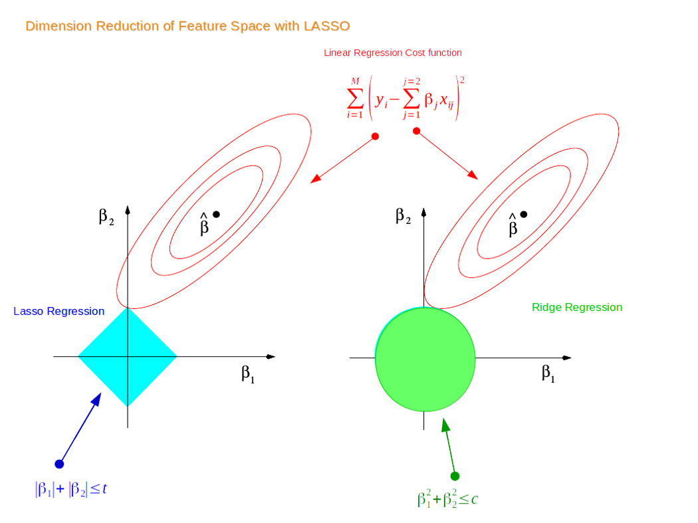

First, we will discuss Ridge Regression. But beofre that let’s first go through Linear Regression. Recall that the cost function for Linear Regression is:
\[min\sum_{i=1}^{n} (\hat y - y)^2\]
The loss function for Ridge Regression is: \[ min \sum_{i=1}^{n} (\hat{y} - y)^2 + \lambda \sum_{i=1}^{m} w_i \] The added regularization term in Ridge Regression is called the \(l2\) -norm which acts as a penalty to Linear Regression. In other words, Ridge Regression introduces a small bias which will make a slightly worse fit. Why? In return for the bias, we can achieve reduced variance that will make the model generalize well for new data. We call this the bias-variance trade-off. If the model has a high variance, it’ll probably not generalize well for unseen future data points.
This is why Ridge Regression is a regularized linear model.
Let’s see what this all means in action:
## Python 3.9.6 ## Import packages import pandas as pdfrom sklearn.datasets import make_regressionfrom sklearn.datasets import make_regressionfrom matplotlib import pyplot as pltfrom sklearn.linear_model import Ridge, Lasso, ElasticNet
## Generate data with one coefficient fitted from a linear regression model = make_regression(= 20 ,= 1 ,= 1 , # number of useful features = 1 ,= 20 ,= True ,= 1
= 1 = Ridge(lambda_value)
Ridge(alpha=1) In a Jupyter environment, please rerun this cell to show the HTML representation or trust the notebook.
Parameters
alpha alpha: float or array-like of shape (n_targets,), default=1.0 1
fit_intercept fit_intercept: bool, default=True True
copy_X copy_X: bool, default=True True
max_iter max_iter: int, default=None None
tol tol: float, default=1e-4 0.0001
solver solver: {'auto', 'svd', 'cholesky', 'lsqr', 'sparse_cg', 'sag', 'saga', 'lbfgs'}, default='auto' 'auto'
positive positive: bool, default=False False
random_state random_state: int, RandomState instance, default=None None
* X, c= 'red' )
As you can see, Ridge Regression (red line) is very close to Linear Regression when lambda_value = 1
If we increase lambda_value to 10:
= 10 = Ridge(lambda_value)
Ridge(alpha=10) In a Jupyter environment, please rerun this cell to show the HTML representation or trust the notebook.
Parameters
alpha alpha: float or array-like of shape (n_targets,), default=1.0 10
fit_intercept fit_intercept: bool, default=True True
copy_X copy_X: bool, default=True True
max_iter max_iter: int, default=None None
tol tol: float, default=1e-4 0.0001
solver solver: {'auto', 'svd', 'cholesky', 'lsqr', 'sparse_cg', 'sag', 'saga', 'lbfgs'}, default='auto' 'auto'
positive positive: bool, default=False False
random_state random_state: int, RandomState instance, default=None None
* X, c= 'red' )
Now, we see a slightly worse fit (higher bias) but we expect to have a lower variance for new data points.
Next, we have Lasso Regression. Like Ridge Regression, it is another regularized linear model to prevent the model from overfitting. The only difference is in the cost function:
\[ min \sum_{i=1}^{n} (\hat{y} - y)^2 + \lambda \sum_{i=1}^{m} |w_i| \] The new regularization term is called the \(l1\) -norm. The difference becomes clear by checking visually:

The first point where the elliptical contours touch the region of constraints is how the coefficients from both Ridge and Lasso Regression are determined. Unlike the circular shape of Ridge, Lasso has corners. Hence, if the contour hits the corners, the feature(s) will disappear. Thus, Lasso can perform variable selection, hence the name Least Absolute Shrinkage and Selection Operator .
If we fit using the same X and y data:
= Lasso(lambda_value)
Lasso(alpha=10) In a Jupyter environment, please rerun this cell to show the HTML representation or trust the notebook.
Parameters
alpha alpha: float, default=1.0 10
fit_intercept fit_intercept: bool, default=True True
precompute precompute: bool or array-like of shape (n_features, n_features), default=False False
copy_X copy_X: bool, default=True True
max_iter max_iter: int, default=1000 1000
tol tol: float, default=1e-4 0.0001
warm_start warm_start: bool, default=False False
positive positive: bool, default=False False
random_state random_state: int, RandomState instance, default=None None
selection selection: {'cyclic', 'random'}, default='cyclic' 'cyclic'
Fitted attributes
Name
Type
Value
coef_ coef_: ndarray of shape (n_features,) or (n_targets, n_features) ndarray[float64](1,)
[62.51]
dual_gap_ dual_gap_: float or ndarray of shape (n_targets,) float64
2.728e-13
intercept_ intercept_: float or ndarray of shape (n_targets,) float64
-5.953
n_features_in_ n_features_in_: int int
1
n_iter_ n_iter_: int or list of int int
2
sparse_coef_ sparse_coef_: sparse matrix of shape (n_features, 1) or (n_targets, n_features) csr_matrix[float64](1, 1)
<Compressed S... shape (1, 1)>
# Plot * X, c= 'red' )
Lasso returns a fairly close fit to Ridge Regression
Lastly, Elastic Net is a middle ground between Ridge Regression and Lasso Regression. The regularization term is a mix of both where \(r\) controls the mix ratio.
\[ min \sum_{i=1}^{n} (\hat{y} - y)^2 + r\lambda \sum_{i=1}^{m}|w_i| + \frac{(1-r)}2 \lambda \sum_{i=1}^{m} w_i^2 \]
## Elastic Net # Fit = ElasticNet(alpha= lambda_value, l1_ratio= .5 )
ElasticNet(alpha=10) In a Jupyter environment, please rerun this cell to show the HTML representation or trust the notebook.
Parameters
alpha alpha: float, default=1.0 10
l1_ratio l1_ratio: float, default=0.5 0.5
fit_intercept fit_intercept: bool, default=True True
precompute precompute: bool or array-like of shape (n_features, n_features), default=False False
max_iter max_iter: int, default=1000 1000
copy_X copy_X: bool, default=True True
tol tol: float, default=1e-4 0.0001
warm_start warm_start: bool, default=False False
positive positive: bool, default=False False
random_state random_state: int, RandomState instance, default=None None
selection selection: {'cyclic', 'random'}, default='cyclic' 'cyclic'
Fitted attributes
Name
Type
Value
coef_ coef_: ndarray of shape (n_features,) or (n_targets, n_features) ndarray[float64](1,)
[12.98]
dual_gap_ dual_gap_: float or ndarray of shape (n_targets,) float64
3.638e-13
intercept_ intercept_: float or ndarray of shape (n_targets,) float64
-12.56
n_features_in_ n_features_in_: int int
1
n_iter_ n_iter_: list of int int
2
sparse_coef_ sparse_coef_: sparse matrix of shape (n_features,) or (n_targets, n_features) csr_matrix[float64](1, 1)
<Compressed S... shape (1, 1)>
# Plot * X, c= 'red' )
So you might be wondering which one to use including Linear Regression without any regularization. Rule of thumb is to avoid using plain Linear Regression. One can start with Ridge but if you think there are features that are not important, you should use Lasso or Elastic Net. Normally, Elastic Net is preferred over Lasso since Lasso can behave weird when the number of features is greater than the number of instances or when some features have a strong correlation.
Before we end this chapter, I’ll talk a little more on how to deal with overfitting and underfitting. Overfitting happens when the model is too complex relative to the amount and noisiness of the training data. The solutions are:
Simplifying your model by choosing one with fewer paramaters like a linear model over a high-degree polynomial model or regularizing the model as we learned from this chapter
Obtain more data
Remove noise such as fixing simple data entry errors or/and removing outliers
For underfitting models we could:
Select a more complex model with more parameters
Feed better features
Loosen up the model constrains
From Hands-On Machine Learning with Scikit-Learn, Keras, and TensorFlow